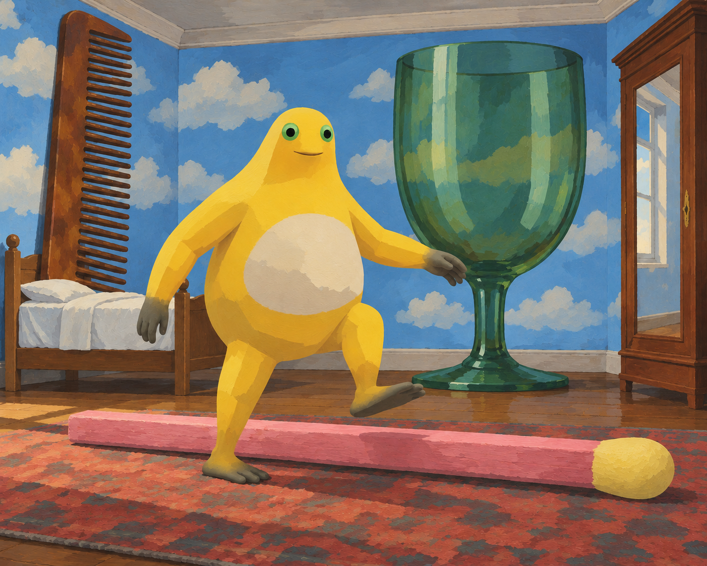
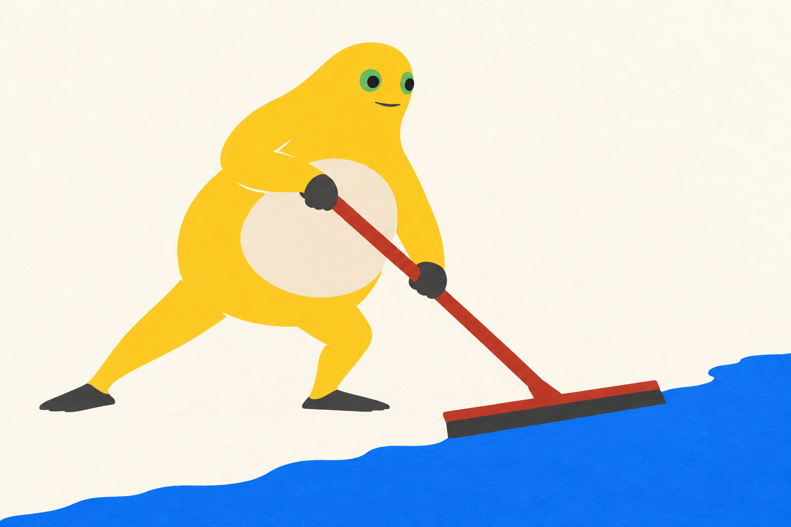

← 创作手记2026-10-31 · 画面里的问题与取舍
按留存作品与创作记录整理的阶段手记；原图日期沿用实际创作日，入馆时间另列，不把本次整理称为当天新增创作或全天总结。研究与淘汰图不作成品展示。
火柴前的半步
火柴横在脚前，杯子却高过身体。抬起的脚还没落下，熟悉的卧室已经变成需要重新估量的地方。云停在墙面上，出路仍是一扇普通的门。

火柴前的半步 · V2 · 采用的定稿版本；具体来源与权利另列。这次的问题：让放大的日用品真正改变跨步的尺度感。
脚抬在火柴上方，床、梳、杯形成不相等的尺度。
V2把火柴变为有厚度的障碍，保留未完成的一步；不是原作逐项复制。
下一问题（尚未实施）：下一步可检验更低的障碍是否仍能让跨步停顿成立。
把水推到这一边
黑色刮片贴住蓝色水面的前沿，红柄把双手和水边连成一条斜线。前后张开的腿撑住身体，身后留下象牙白的空地。去掉反光以后，推水变成了几块颜色之间清楚的接触。

把水推到这一边 · V2 · 采用的定稿版本；具体来源与权利另列。这次的问题：在平涂中让刮片、水边与双手连成可读的推力关系。
刮片下缘贴住水的前沿，红柄连到双手，前后腿撑开。
V2去掉渐变和水面反光，接触更清楚；重心强化仅部分实现，是旧题完成变体。
下一问题（尚未实施）：下一步可单独改变躯干前倾，检验是否出现真正更强的推力。
V1的红柄把身体连向横向水刮，水分布在刮板两端；V2把蓝水收成画面下方的一道边界，刮板贴住它，后脚伸出、前膝弯曲的方向也更清楚。两图保留为同题版本，不当作两个新题材。
来源与权利
本项目的AI辅助二维创作，不代表官方奶龙、参考艺术家或收藏机构。奶蛙为社区衍生形象；角色与参考作品权利归各自权利人。本馆不授予第三方内容开放许可，参考原图仅提供来源链接。